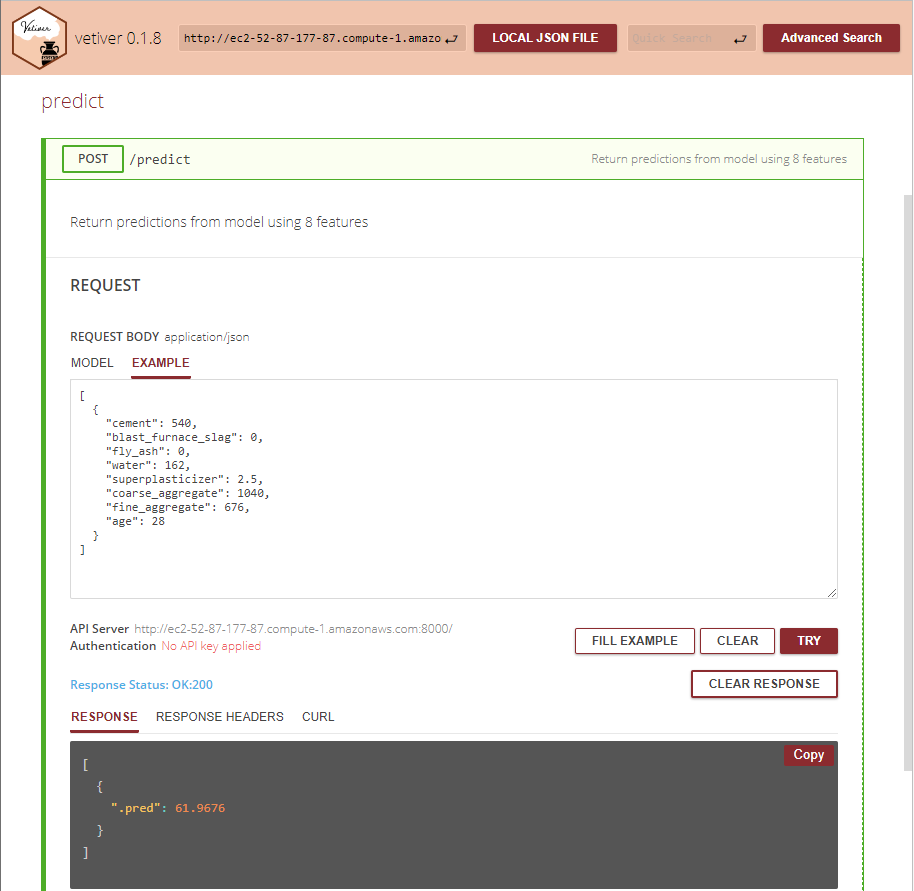

An Application Programming Interface (API) to predict concrete compressive strength is implemented in the cloud using an AWS EC2 instance.
In this post, we create an API for the deployable model object pinned to an S3 bucket as described in the previous post. We start by creating an Elastic Compute (EC2) instance on AWS to run the API. The vetiver package is used to write a Dockerfile for running the API inside a Docker container on the EC2 instance. The R script to run a plumber API for the model object is also created using the vetiver package. The EC2 instance is set up with Docker and the container is created from the Dockerfile. The API can then be run to provide compressive strength predictions for different concrete formulations.
Create an EC2 instance to run a Docker container with a Plumber API
I chose to use the Elastic Compute (EC2) service from AWS to run the API in a docker container. The basics of setting up an EC2 instance are captured well in the The Shiny AWS book. I mostly accepted the defaults offered by AWS as described below:
- Enter a name for the instance such as docker-api-test.
- Select Amazon Machine Image (AMI) for which I chose the free tier eligible, Amazon Linux (Amazon Linux 2 Kernel 5.10 AMI 2.0.20220912.1 x86_64 HVM gp2).
- Select the Instance Type. Here is chose free tier eligible, t2.micro (1 CPU, 1 GB memory).
- Create a key-pair for security access (unless you already have one you would like to re-use). This generates a .pem file to save.
- Leave the Network Settings as default for now. These settings will need to be changed later.
- For Storage, I increased the amount to the free tier limit of 30 GB.
- No changes to Detailed Settings.
- Launch the instance.
Create a Security Group to Allow Access to the API
The inbound and outbound rules need to be adjusted for the API to work properly. I found an article by Martin Lukac on “Deploying a plumber API to AWS EC2 instance” which contained the rules which also worked for me.
Inbound rules:
1. Type: SSH, Protocol: TCP, Port: 22, Source: 0.0.0.0/0 (by default this was added)
2. Type: HTTP, Protocol: TCP, Port: 80, Source: 0.0.0.0/0
3. Type: Custom TCP, Protocol: TCP, Port: 8000, Source: 0.0.0.0/0 (for accessing the API)
4. Type: Custom ICMP Rule IPv4, Protocol: Echo Request, Port: N/A, Source: 0.0.0.0/0 (for testing)
Outbound rule:
1. Type: All traffic, Protocol: All, Port Range: All, Destination: 0.0.0.0/0 (by default this was added)
The Security Group is then added to the proper EC2 instance.
Connecting to your EC2 instance with PuTTY
You need to connect to your EC2 instance via an SSH client. A convenient option for Windows users is PuTTY an SSH and telnet client originally developed by Simon Tatham. The website for the Alaska Satellite Facility has a nice walkthrough on setting up PuTTY to access your EC2 instance.
Generate a PuTTY private key file (.ppk)
In brief, the steps to create the .ppk file from the AWS .pem file are as follows:
- Start the puttygen.exe program.
- Click on Load and find your .pem file you generated in Step 4 of Create an EC2 Instance above.
- Make sure Type of key to generate is set to RSA.
- Click on Save private key, name the file and save the ppk file.
Configure PuTTY to connect to your EC2 instance
- Start the putty.exe program
- Enter the Host name as ec2-user@your_public_DNS where your_public_DNS is listed in the description for your EC2 on the AWS console. It should be something like ec2-12-345-678-910.compute-1.amazonaws.com. Note: If you use an Ubuntu machine image the host name will begin with ubuntu@ instead of ec2-user@.
- Make sure the Port is set to 22.
- The Connection type needs to be set to SSH.
- In the Category pane on the left side of PuTTY configuration window, find the Connection category and expand the SSH options by clicking on the “+” and then click on Auth.
- Under Private key for authentification, click on the Browse button and load the ppk file you generated above.
- In the Category pane, click on Session and in the box under Saved Sessions, enter a name for this connection and then click on Save.
Connect to your EC2
- Start the “putty.exe” program.
- Click on the Saved Sessions you named in Step 7 above.
- Click on Open to bring up a terminal session connected to your EC2.
Load and Start Docker on EC2
The AWS EC2 instance does not come pre-loaded with Docker so it needs to be installed. A nice walkthrough can be found on the [Workfall Blog] (https://www.workfall.com/learning/blog/how-to-install-and-run-docker-containers-on-amazon-ec2-instance/). You first need to connect to your EC2 instance with PuTTY as described above. The next steps are as follows:
- Update the installed packages and package cache by running the command:
sudo yum update -y - Install the most recent Docker package by running the command:
sudo amazon-linux-extras install docker - Start the Docker service:
sudo service docker start - Add the ec2-user to the Docker group so you don’t need to execute Docker commands with sudo:
sudo usermod -a -G Docker ec2-user - Log out and log back into the EC2 instance and run a command to verify:
docker info
Write the Dockerfile and Plumber API script
library(vetiver)
library(pins)
board <- board_s3("pins-test-zoller", region = "us-east-2")
v <- vetiver_pin_read(board, name = "concrete-xgb", version = "20221019T191525Z-b1278")
vetiver_write_plumber(board, name = "concrete-xgb", version = "20221019T191525Z-b1278", rsconnect = FALSE)
vetiver_write_docker(v)The contents of the Dockerfile
# Generated by the vetiver package; edit with care
FROM rocker/r-ver:4.2.0
ENV RENV_CONFIG_REPOS_OVERRIDE https://packagemanager.rstudio.com/cran/latest
RUN apt-get update -qq && apt-get install -y --no-install-recommends \
libcurl4-openssl-dev \
libicu-dev \
libsodium-dev \
libssl-dev \
make \
zlib1g-dev \
&& apt-get clean
COPY vetiver_renv.lock renv.lock
RUN Rscript -e "install.packages('renv')"
RUN Rscript -e "renv::restore()"
COPY plumber.R /opt/ml/plumber.R
EXPOSE 8000
ENTRYPOINT ["R", "-e", "pr <- plumber::plumb('/opt/ml/plumber.R'); pr$run(host = '0.0.0.0', port = 8000)"]The contents of the plumber.R file
# Generated by the vetiver package; edit with care
library(pins)
library(plumber)
library(rapidoc)
library(vetiver)
b <- board_s3(bucket = "pins-test-zoller", region = structure("us-east-2", tags = list(type = "scalar")))
v <- vetiver_pin_read(b, "concrete-xgb", version = "20221019T191525Z-b1278")
#* @plumber
function(pr) {
pr %>% vetiver_api(v)
}Editing the Dockerfile for Amazon Linux EC2
I found that a couple of edits were necessary to successfully create the Docker container. The libxml2 library needs to be installed in the container which can be added into the RUN apt-get update command line. The paws.storage R library needs to be installed by adding the command RUN Rscript -e "install.packages('paws.storage')". This issue has been reported on the vetiver Github as it is not recognized as a dependency when creating the renv lockfile.
The edited version should be:
# Generated by the vetiver package; edit with care
FROM rocker/r-ver:4.2.0
ENV RENV_CONFIG_REPOS_OVERRIDE https://packagemanager.rstudio.com/cran/latest
RUN apt-get update -qq && apt-get install -y --no-install-recommends \
libcurl4-openssl-dev \
libicu-dev \
libsodium-dev \
libssl-dev \
libxml2 \
make \
zlib1g-dev \
&& apt-get clean
COPY vetiver_renv.lock renv.lock
RUN Rscript -e "install.packages('renv')"
RUN Rscript -e "renv::restore()"
RUN Rscript -e "install.packages('paws.storage')"
COPY plumber.R /opt/ml/plumber.R
EXPOSE 8000
ENTRYPOINT ["R", "-e", "pr <- plumber::plumb('/opt/ml/plumber.R'); pr$run(host = '0.0.0.0', port = 8000)"]Copying files to your EC2 instance
The article at this link describes two different methods for copying files from Windows to an EC2 instance using WinSCP and using PuTTY secure copy. I used PuTTY secure copy (PSCP) since PuTTY is already installed on my computer and there are not many files to copy. PSCP is a command line utility
pscp -i your-key.ppk yourfilename ec2-user@yourPublicDNS:/home/ec2-user/
where your-key.ppk is your PuTTY private key file previously generated to connect to your EC2 instance. The ppk file needs to be in the same directory with the files you are copying to the EC2 instance.
You need to copy the Dockerfile, vetiver_renv.lock and plumber.R files to your EC2 instance in the ec2-user directory.
Build and run the Docker API
- Log in to (SSH) the EC2 instance and start the Docker service:
sudo service docker start - Build the docker container from the Dockerfile:
docker build -t concrete-xgb-api . - Start the API:
docker run --rm -p 8000:8000 concrete-xgb-api - The API can then be tested by connecting to the rapiddoc Docs on your instance via a web browser:
http://yourEC2PublicDNS:8000/__docs__/
If you successfully connect to the API, you will see a page such as shown below.

You can click on GET and TRY to ping the status of your API. You can test the predictive model by clicking on POST and then under REQUEST click on the Example tab. You can then enter different values for the predictors in the format shown in the Example and then click on TRY and the outcome will show below in the Response window. An example for the Concrete API is shown in the figure below.

Summary
In this post, I have shown how to launch an API inside a Docker Container running on an EC2 instance. The Dockerfile and plumber API script was created using the vetiver package. The API accesses an xgboost model to predict concrete strength from ingredients and age that was versioned and posted to an AWS S3 container as described in the previous post. I am curious about building a Shiny app to utilize this API but this will need to wait for a future post.